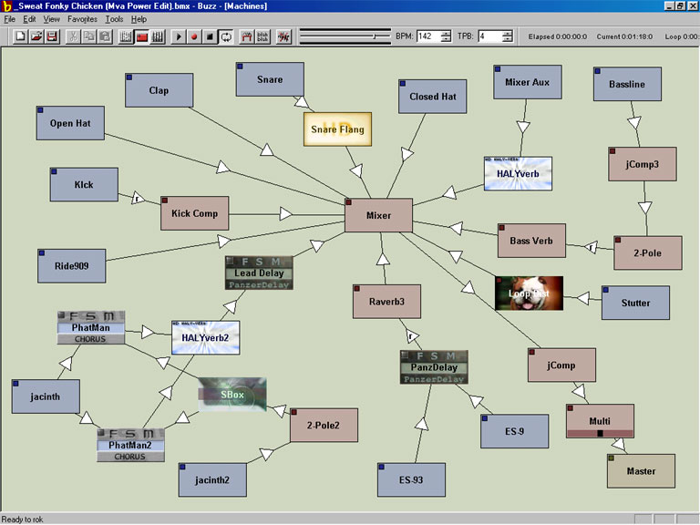
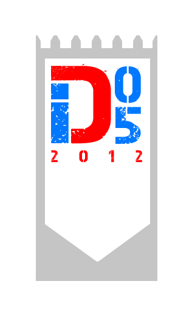
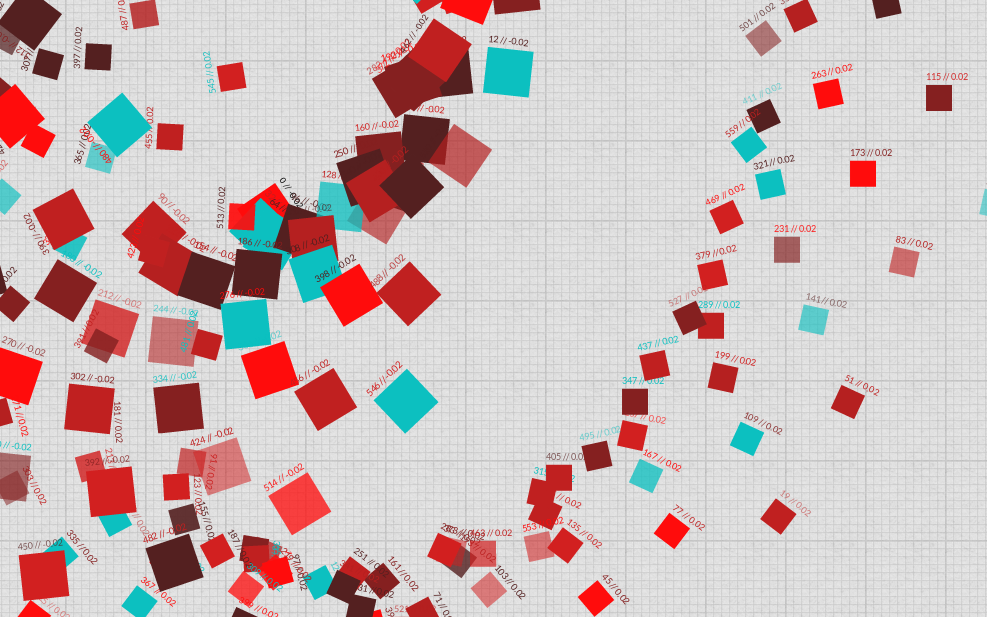
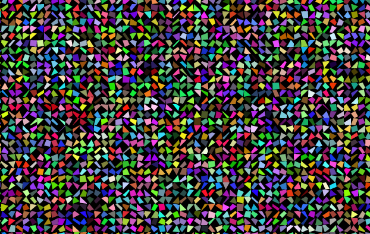
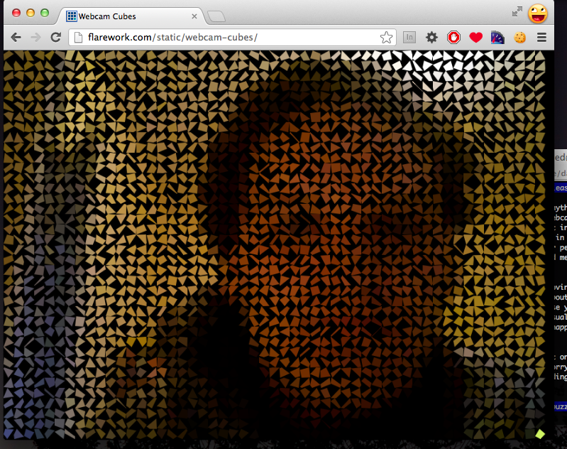
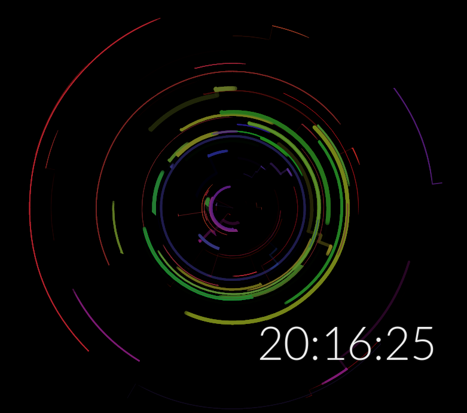

Javascript Canvas
Audiovisual Light & Magic
javascript, processingjs, webgl, html5
canvas element, realtime sound synthesis, emulators
size optimization, html5 on mobiles
demoscene, creative coding, closure compiler, png compressors
and the benefits of using parsley in your cooking.
feel free to interrupt for questions

Experimental music with buzz

inércia Demoparty
The potential of Javascript Canvas
First time for everything!
JS is a dynamic language with minimal boilerplate (bugs a gogo!)
In a browser context, lives in the DOM, which has an incredibly rich presentation and input API
"F5" = see your result
2012 browsers are rocket powered fire breathing monsters compared to just a few years ago
The DOM's API is constantly being extended with new features
It's ubiquitous - your audience is the world
Everyone in this room is better at maths than me :D
Let's make hundreds of cubes and animate them!

Particles are pretty fun
Can use multiple canvas elements in a page
How far can we push this?

Threads (in the form of web workers) to the rescue

Turned an effect into a "polar clock" idea

No hardware acceleration = forget it
iOS 5+ devices generally the winner (compared to Android 2.1-4.0, webOS) from our limited testing - phones are expensive :(
Interesting tools available for boosting even further canvas performance in iOS packaged apps - Ejecta, from ImpactJS team
Android has a massive variety of devices, very hard to depend on a particular combination for good performance
Thank you for watching, over to Filipe!
Where to start?
Demo or die!
You don't actually need to die...
Code every single day
Even if it's just 15 minutes
Focus on putting something moving on the screen
Your mega engine will come later
OOP and Software Design Patterns?
"Fuck that shit!"
"Just KISS it!"
Keep It Simple, Stupid
1) When in doubt, do a new effect
(the more effects available the better)
(HTML5 cheat sheet is your friend)
2) Get a soundtrack that brings stuff together
(don't settle for crap sounds, even if your code is crap)
3) Don't let the coder pick the colorscheme
(god invented graphic designers for a reason, use them)
4) Set a realistic deadline and meet it
(Sure you could do the best engine ever, in 5 years)
(Releasing stuff is motivating, use it in your favor)
Filipe's earlier experiments
Baby Demo @ Stream 2011
Failed Android webview HTML5 benchmark test demo
Blind Serpent @ The Flame Party Helsinki 2011
WebGL remix
pgen @ Assembly 2011
ProcessingJS generative art slideshow
shogun neophyte @ LGRU 2011
javascript animation using comic creator tool by kesiev
Spreading Love Liebe Amor @ JS1K Love 2012
Cyboman 5 4k @ Stream 2012
code some new effects
bytesize music
http://countercomplex.blogspot.com
javascript 1k speech synth
better then UglifyJS:
better then PNGinator:
sci-fi web book game
imposed myself a deadline
(demoparty accepting IF entries in 2 months)
started writing storyline
(based on unpublished sci fi novel i had written months before)
re-structured storyline and re-engineered engine
(after chapter 1 was half-way done)
added audio support (tracks taken from my netlabel)
adapted effects to match project
bothered graphician friends for some graphics
polished chapter 1
finished chapter 2
beta tested
polish until deadline
<audio> problems cross-fading
variable resolutions
button drag/tap problems
10k for DemoJS 2012
code some new effects
soundtrack options:
requestAnimationFrame
off-screen rendering
compositing
problems:
74k original.js
33k closure.js
10k pnginator.js
sci-fi web book game
Questions?
{kind=link}